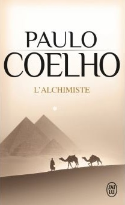
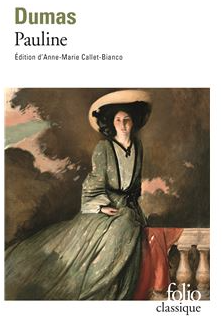
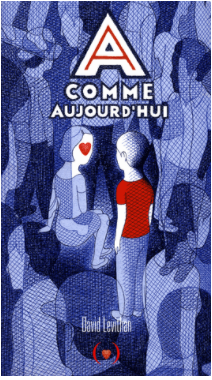
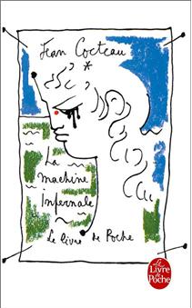
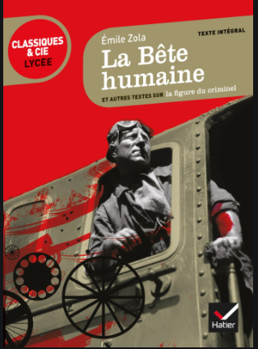
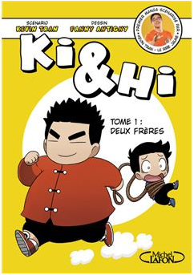

LES COUPS DE COEUR L'Alchimiste

Descriptions :
Le héros de ce court roman est un jeune berger espagnol, Santiago. Il a fait ses études au séminaire, mais il a renoncé à être prêtre, contre le souhait de ses parents. Il préfère une vie au contact de la Nature, tout en continuant à se cultiver par la lecture. À la suite d'un rêve lui révélant l'existence d'un trésor caché au pied des pyramides d'Égypte, il décide d'entreprendre le voyage qui le conduit d'Andalousie jusqu'à Gizeh, en passant par Tanger et le désert du Sahara. Le Remède Mortel Descriptions :
Le WICKED a tout volé à Thomas : sa vie, sa mémoire et maintenant ses seuls amis. Mais l'épreuve touche à sa fin. Ne reste qu'un dernier test... Terrifiant. Cependant Thomas a retrouvé assez de souvenirs pour ne plus faire confiance à l'Organisation. Il a triomphé du labyrinthe. Il a survécu sur la terre brûlée. Il fera tout pour sauver ses amis, même si la vérité risque de provoquer la fin de tout. Sa nouvelle série The Maze Runner, créée en 2009, devient rapidement un best-seller. Pauline

Descriptions :
«Vous vous réveillerez dans un caveau où nul n'est descendu depuis vingt ans, et dans lequel, d'ici à vingt ans peut-être, nul ne descendra encore. N'ayez donc aucun espoir de secours, car il serait inutile. Vous trouverez du poison près de cette lettre : tout ce que je puis faire pour vous est de vous offrir une mort prompte et douce au lieu d'une agonie lente et douloureuse. Dans l'un et l'autre cas, et quelque parti que vous preniez, à compter de cette heure, vous êtes morte.»Pauline (1838) est un des premiers romans de Dumas, où Monte-Cristo se trouve en germe. C'est un livre qu'il a écrit seul, et qui se déroule de son temps. La fiction brode sur les thèmes du roman gothique, en «noir», nuit, cottage en ruine, sentes perdues, passages secrets, brigands impitoyables, héroïne enterrée vivante, substitution de cadavres.Pauline fait face à un bourreau mystérieux, «homme fatal». C'est le roman d'une jeunesse déboussolée qui tente de se faire une place dans une société mesquine. En Avant Première A comme Aujourd'hui

Descriptions :
Chaque jour dans un corps différent, chaque jour une nouvelle vie.
Mais tous les jours amoureux de la même fille.
Chaque matin, A se réveille dans un corps différent, et ne dispose d’aucun moyen de savoir où, et « qui » sera son hôte. Une seule chose est sûre : il n’empruntera cette identité que le temps d’une journée. Aussi incroyable que cela paraisse, A a accepté cet état de fait, et a même établi plusieurs règles qui régissent son existence singulière : ne pas s’attacher ; ne pas se faire remarquer ; ne jamais s’immiscer dans la vie de l’autre.
Des préceptes qui resteront les siens jusqu’à ce qu’il se réveille dans le corps de Justin, 16 ans, et qu’il fasse La Machine Infernale

Descriptions :
Obéissant à l’oracle, Œdipe résout l’énigme du Sphinx, tue son père et épouse sa mère. La peste s’abat sur Thèbes qui a couronné un inceste et un parricide. Quand un berger dévoile la vérité, la machine infernale des dieux explose. Œdipe se crève les yeux et sa mère se pend.
S’inspirant du théâtre de Sophocle, Cocteau redonne vie aux grandes figures grecques : Œdipe, Jocaste, Antigone et Créon. Il philosophe en virtuose. Non, l’homme n’est pas libre. Il naît aveugle et les dieux règlent sa destinée. Même le héros, celui qui sort du rang, doit se soumettre. Ce grand texte dit tout sur l’homme avec infiniment d’humour et de poésie. La Bête Humaine

Descriptions :
La Bête humaine est un roman d'Émile Zola publié en 1890. C'est le 17ème volume de la série Les Rougon-Macquart, l'oeuvre-monde de Zola. L'auteur y aborde conjointement sa conception de la justice et le monde ferroviaire. On pense généralement ce roman comme ayant deux héros : d'une part, le mécanicien Jacques Lantier et, d'autre part, sa locomotive, la Lison, que le héros aime plus qu'une femme. Il choque les contemporains à sa sortie du fait de son aspect moderne, assimilable au genre du thriller d'aujourd'hui. Il y est décrit deux viols, plusieurs meurtres et deux catastrophes - pour la plupart inspirés de faits réels. Ki et Hi - Tome 01 : Ki et Hi - tome 1 Deux frères

Descriptions :
Ki et Hi sont deux frères complètement barrés qui font les quatre cents coups dans le plus petit village d'un royaume en forme de panda. Le premier est grand, gros et adore martyriser le second, petit, maigrichon, mais prêt à tout pour se venger de la manière la plus sournoise possible !
Qu'il s'agisse de dévaliser un restaurant de sushis à volonté, de s'affronter lors d'un intense match de basket ou au contraire de s'allier pour protéger le village, ce manga retrace, au travers de multiples histoires courtes, toutes les nuances qui existent dans une relation entre frères, on rit du début à la fin en suivant les tribulations de deux frères, Ki et Hi. Une terre promise Descriptions :
Dans le premier volume de ses mémoires présidentiels, Barack Obama raconte l'histoire passionnante de son improbable odyssée, celle d'un jeune homme en quête d'identité devenu dirigeant du monde libre, retraçant de manière personnelle son éducation politique et les moments emblématiques du premier mandat de sa présidence - une période de transformations et de bouleversements profonds.
Barack Obama nous invite à le suivre.
Toujours plus, + = + Descriptions :
" Je vous jure, il est bien, achetez-le ! "
Parce que, depuis le lycée, Lena est une adepte du développement personnel, elle a souhaité faire de ce livre un guide pratique à destination des jeunes pour dire NON à la déprime, à la morosité et à la spirale du négatif ; OUI au positif, à la joie, à l'acceptation de soi et à la réussite. Un manuel pratique et militant, de bonne humeur et d'esprit positif, qu'elle résume elle-même sous cette formule : + = +